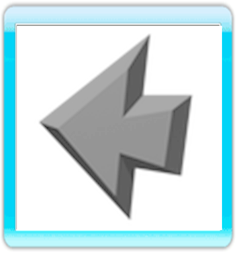
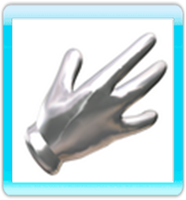

Télécommande Wii
 Toutes les actions du jeu s'effectuent à l'aide de la télécommande Wii. Elle vous permet de déplacer le curseur à l’écran et d'indiquer les différentes options de jeu.
Toutes les actions du jeu s'effectuent à l'aide de la télécommande Wii. Elle vous permet de déplacer le curseur à l’écran et d'indiquer les différentes options de jeu.
Le curseur de la télécommande Wii peut prendre la forme de quatre icônes différentes. Chaque icône représente une action possible.
SE DÉPLACER
L'icône par défaut est un réticule qui permet de déplacer le personnage dans une direction donnée. Lorsque l'icône se transforme en flèche, cela signifie que vous pouvez rejoindre un endroit plus précis. Si vous appuyez sur le bouton A, le personnage se rend alors à cet endroit.
REGARDER
 La deuxième icône représente une loupe qui n'apparaît que sur les objets et sur certains personnages. Elle vous permet de les regarder avec précision. Lorsque vous appuyez sur le bouton A, Fenimore s'approche de l'objet à examiner et l’affichage passe en vue subjective, vous permettez ainsi d'observer certains détails. Par exemple, si vous placez la loupe sur un tiroir et appuyez sur le bouton A, vous pouvez regarder ce qu'il renferme.
La deuxième icône représente une loupe qui n'apparaît que sur les objets et sur certains personnages. Elle vous permet de les regarder avec précision. Lorsque vous appuyez sur le bouton A, Fenimore s'approche de l'objet à examiner et l’affichage passe en vue subjective, vous permettez ainsi d'observer certains détails. Par exemple, si vous placez la loupe sur un tiroir et appuyez sur le bouton A, vous pouvez regarder ce qu'il renferme.
UTILISER
La troisième icône représente une main qui permet d'interagir avec les objets â l’écran. Par exemple, si vous posez la main sur une porte, elle vous indique que vous pouvez ouvrir cette porte, si vous la posez sur un seau, vous aurez la possibilité de ramasser ce seau. Enfin, si vous placez la main sur un cheval, vous pourrez monter à cheval.
PARLER
 La quatrième icône est une bulle, qui ne vous sert qu'à parler, il n'apparaît donc qu'au-dessus des différents personnages. Une fois la conversation entamée, les différentes options de conversation apparaissent sur la droite de l’écran sous forme de visages. Vous avez toujours la possibilité de mettre un terme à une conversation en sélectionnant la flèche du bas. Enfin, vous pouvez appuyer sur un dossier pour entamer une conversation sur un nouveau thème.
La quatrième icône est une bulle, qui ne vous sert qu'à parler, il n'apparaît donc qu'au-dessus des différents personnages. Une fois la conversation entamée, les différentes options de conversation apparaissent sur la droite de l’écran sous forme de visages. Vous avez toujours la possibilité de mettre un terme à une conversation en sélectionnant la flèche du bas. Enfin, vous pouvez appuyer sur un dossier pour entamer une conversation sur un nouveau thème.
CHANGER D'ICONE
Pour passer d'un icône à l’autre, de la loupe à la main ou à la bulle, appuyez sur le bouton B. Lorsque le curseur se trouve sur un objet précis dont le nom apparaît en bas de l’écran, dans la barre d'ordres (bande noire en dessous de l’écran), appuyez sur le bouton B pour passer à la loupe si vous souhaitez examiner l'objet, ou à la main, pour l'utiliser ou le prendre.